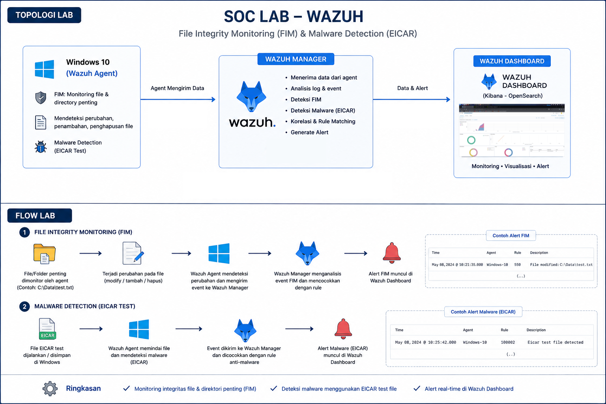

Project Overview
Proyek ini merupakan implementasi nyata pembangunan Home Lab SIEM (Security Information and Event Management) menggunakan platform Wazuh. Dengan memasang Wazuh Manager pada Kali Linux dan mengintegrasikan agen pemantau pada Windows endpoint, lab ini berfungsi sebagai pusat analisis log dan deteksi ancaman real-time.
Tujuan Proyek:
- Membangun infrastruktur terpusat Home Lab SIEM.
- Monitoring endpoint dan pengumpulan Windows Security Event Log.
- Monitoring keamanan menyeluruh pada OS Windows.
- Implementasi deteksi modifikasi lewat File Integrity Monitoring (FIM).
- Audit regulasi menggunakan Security Configuration Assessment (SCA).
- Pemantauan berkala data sistem internal via modul Syscollector.
Hardware Requirements
- CPU: Minimal 2 Core
- RAM: Minimal 4 GB
- Storage: 40 GB
- Network: NAT Mode
- Internet: Koneksi Aktif
Software Requirements
- Manager Host: Kali Linux
- Target Endpoint: Windows 11
- Wazuh SIEM: Versi 4.14
- Shell Host: PowerShell Administrator
- Browser: Chrome / Firefox
Topologi & Flow Lab
Berikut adalah visualisasi lengkap mengenai arsitektur topologi jaringan serta alur pengujian (flow) untuk modul File Integrity Monitoring (FIM) dan Malware Detection (EICAR Test) di dalam lingkungan lab:

Diagram: Arsitektur Topologi & Alur Proses Deteksi FIM & Malware (EICAR)
Berdasarkan skema alur di atas, pengujian lab dibagi menjadi dua mekanisme utama:
-
File Integrity Monitoring (FIM): Mendeteksi setiap
modifikasi, pembuatan, atau penghapusan file pada direktori penting
(contoh:
C:\Data\test.txt), kemudian Wazuh Agent mengirimkan event tersebut ke Manager untuk memicu alert. - Malware Detection (EICAR Test): Menjalankan atau menyimpan file uji EICAR di Windows. Wazuh Agent langsung memindai dan mengirimkan alert ancaman malware secara real-time ke dashboard.
Step 1 — Install Wazuh Manager
Proses deployment komponen manajemen utama Wazuh (All-In-One Script) dieksekusi di dalam mesin Kali Linux menggunakan satu baris perintah otomatis.
curl -sO https://packages.wazuh.com/4.14/wazuh-install.sh && sudo bash ./wazuh-install.sh -a
Hasil instalasi berupa backup otomatis berkas konfigurasi user di
folder
/etc/wazuh-indexer/internalusers-backup beserta
output detail URL kredensial login admin.
Step 2 — Login Dashboard
Akses visual monitoring dashboard menggunakan alamat IP lokal server Wazuh Manager melalui web browser.
-
URL Akses:
https://192.168.226.135 - Username:
admin -
Password:
mKaST*14amWm?Ra524ouG?8*ExhGw0Ez
Step 3 — Deploy Windows Agent
Tambahkan target host baru dengan menekan tombol "Deploy new agent" dari konsol Web Wazuh:
- Pilih opsi platform OS: Windows
- Masukkan IP Address Manager:
192.168.226.135 -
Tentukan nama identitas agen, contoh:
Windows-2026
Step 4 — Install Windows Agent
Eksekusi script di terminal PowerShell dengan privilese Run as Administrator pada sisi endpoint Windows target.
Invoke-WebRequest -Uri https://packages.wazuh.com/4.x/windows/wazuh-agent-4.14.6-1.msi -OutFile $env:tmp\wazuh-agent.msi; msiexec.exe /i $env:tmp\wazuh-agent.msi /q WAZUH_MANAGER='192.168.226.135' WAZUH_AGENT_NAME='Windows-2026'
Gunakan perintah berikut untuk memvalidasi keberadaan file paket installer msi:
Test-Path "$env:TEMP\wazuh-agent.msi"
Step 5 — Verify Service
Lakukan validasi status kelayakan operasi dari service agent maupun manager server.
PowerShell Windows:
Get-Service WazuhSvc
Terminal Kali Linux:
sudo systemctl status wazuh-manager
Untuk memicu pembaruan atau me-restart agen Windows, eksekusi:
Restart-Service WazuhSvc
Step 6 — Troubleshooting
Jika status agen terdeteksi 'Disconnected' berkelanjutan, periksa kecocokan data server pada file konfigurasi lokal Windows.
Catatan Penting: Jalankan text editor (seperti Notepad) dengan opsi Run as Administrator sebelum memodifikasi berkas konfigurasi di bawah ini:
C:\Program Files (x86)\ossec-agent\ossec.conf
Ubah alamat tujuan agen yang semula default bernilai:
<address>0.0.0.0</address>
Arahkan menuju IP statis Wazuh Manager Anda:
<address>192.168.226.135</address>
Gunakan command network berikut untuk menguji konektivitas port TCP 1514:
Test-NetConnection 192.168.226.135 -Port 1514
Step 7 — File Integrity Monitoring
Konfigurasikan pengawasan berkas real-time dengan mendaftarkan
direktori khusus ke dalam berkas ossec.conf milik
agen di bawah tag elemen induk <syscheck>:
<directories realtime="yes">C:\Users\Administrator\Hacker</directories> <directories realtime="yes" check_all="yes">D:\hackeren</directories>
Simpan perubahan berkas, lalu lakukan penyegaran service agen melalui PowerShell:
Restart-Service WazuhSvc
Step 8 — Monitoring Result
Berikut matrik pencapaian hasil akhir validasi fungsionalitas monitoring perangkat lab:
Agent Connected
Koneksi agen via port 1514 berstatus berhasil.
Service Running
Modul service WazuhSvc aktif di Windows.
Status Active
Dashboard mendeteksi status agen sebagai active.
Log Collected
Security event log terkirim ke server manager.
FIM Running
Deteksi modifikasi file beroperasi secara real-time.
Syscollector Active
Inventori paket hardware & software terhimpun otomatis.
Kesimpulan
Seluruh tahapan instalasi, konfigurasi, dan verifikasi komponen proyek Home Lab SIEM ini berhasil diselesaikan dengan baik. Windows Agent kini telah terhubung secara aman dengan Wazuh Manager, dan seluruh fitur penting mulai dari pengumpulan log hingga monitoring integritas file (FIM) berfungsi dengan stabilitas tinggi.